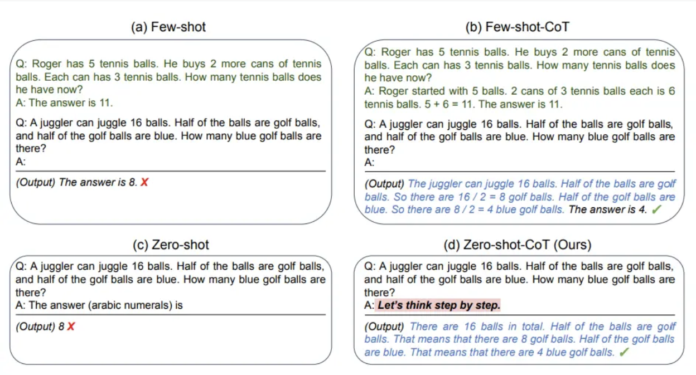
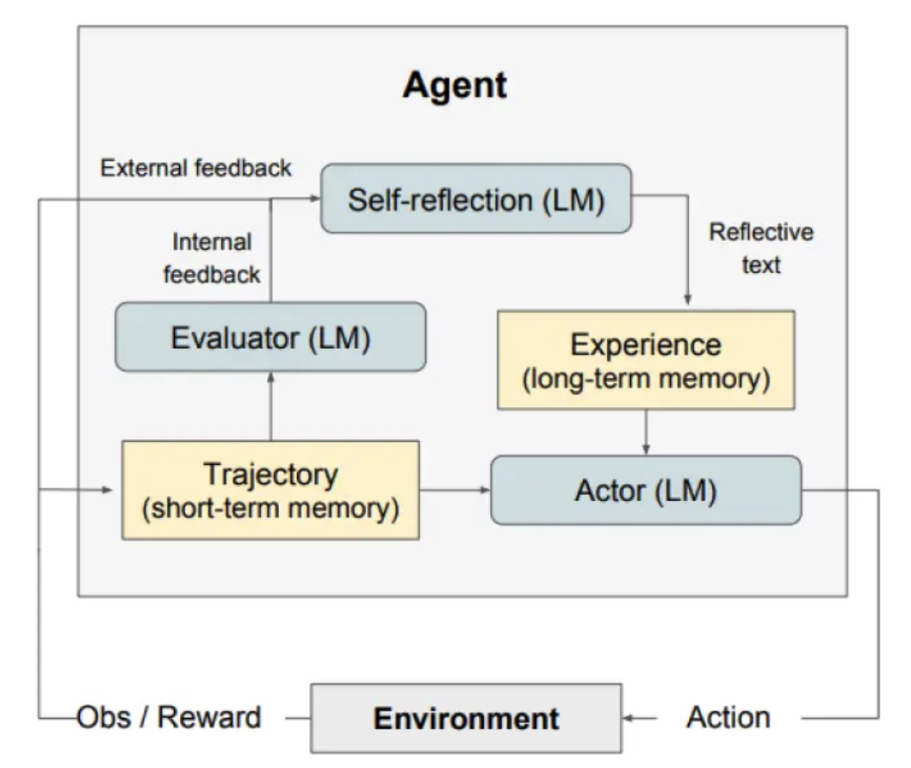
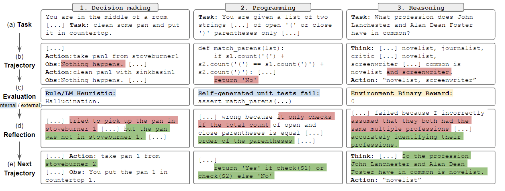
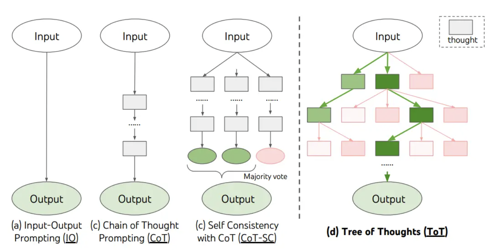
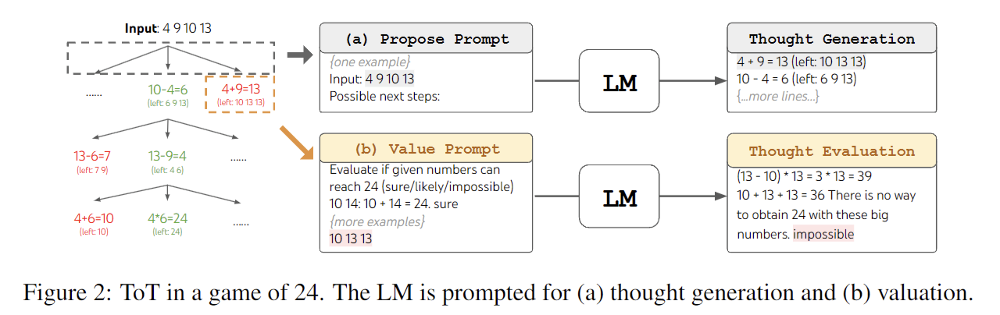
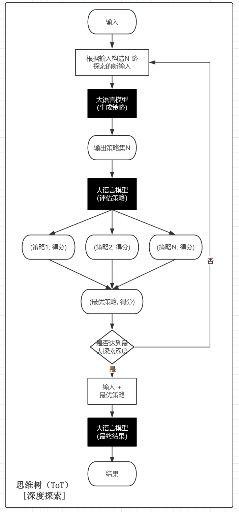

课堂笔记提要：先用五条原则保证输入清楚、可验证，再根据任务复杂度选择示例、链式拆分、工具调用、自我反思或搜索式推理。
生产实践：复杂任务应要求模型给出简洁、可验证的依据、引用或中间结果，不要把冗长的内部“思维过程”当作正确性的保证。
学习目标
- 了解什么是提示工程
- 掌握提示工程的设计技巧
- 熟悉常用的提示技术
1 概念
- 提示工程（Prompt Engineering），也称为 In-Context Prompting，是指在不更新模型权重的情况下如何与 大模型交互以引导其行为以获得所需结果的方法。
- 在人工智能领域，Prompt指的是用户给大型语言模型发出的指令。例如，“「讲个笑话」”、“「用Python编个贪吃蛇游戏」”、“「写封情书」"等。虽然看似简单，但实际上，Prompt的设计对于模型的结果影响很大。因此如何设计prompt，进而与模型更好的交互，是研究人员必备的必不可少的技能（提示工程）。
- 提示工程不仅仅是关于设计和研发提示词。它包含了与大语言模型交互和研发的各种技能和技术。提示工程在实现和大语言模型交互、对接，以及理解大语言模型能力方面都起着重要作用。用户可以通过提示工程来提高大语言模型的安全性，也可以赋能大语言模型，比如借助专业领域知识和外部工具来增强大语言模型能力。
2 提示工程的原则
- 基于OpenAI官网文档，我们提炼出了5条大原则：
- 清晰的指令
- 文本参考
- 复杂任务拆分简单子任务
- 给模型"思考"的时间
- 借助外部工具
- 接下来，我们将对每一种具体的原则进行原理讲解以及举例实时，以帮助我们在日常工作准确的使用LLM。
2.1 清晰的指令
- 任何Prompt技巧，都不如清晰的表达你的需求。这就类似人与人沟通，如果话说不明白，不可能让别人理解你的思想。因此，写出清晰的指令，是核心。
- 那么如何写出清晰的指令呢？下面罗列几个小技巧：
2.1.1 详细的描述
- 当我们进行模型的提问时，不要描述的太笼统，而是尽量多的提供重要的详细信息或上下文.
eg: 不要直接说，"帮我写一封情书"；而是说："用一些温柔的话语写一封情书，来表达我对你的仰慕和思念。最后，我要求书写字体数要不低于500个字"
2.1.2 让模型充当某个角色
- 当我们使用大模型时，可以让模型充当一个角色，这样模型会更专业更明确的对你的问题进行回复.
Eg：我需要你充当一个AI算法面试官的角色，要求你自主的对我进行AI面试过程中常考的面试题，你可以一次说一个问题，然后我回答完，你再出第二道题
2.1.3 使用分隔符标明输入的不同部分
- 中括号、XML标签、三引号等分隔符可以帮助划分要区别对待的文本，也可以帮助模型更好的理解文本内容。常用''''''把内容框起来
eg：用20个字符总结由三引号分割的文本。"""在此插入文本"""
2.1.4 提供例子
- 本质类似于few-shot leaning。先扔给大模型举例，然后让模型按照例子来输出
eg: 按照这句评论文本的格式：'""用户输入文本""'，帮我创造新的样本
2.1.5 指定输出长度
- 可以要求模型生成给定目标长度的输出。目标输出长度可以根据单词、句子、段落、要点等的计数来指定。中文效果不明显，同时你给定的长度只是个大概, 多少个字这种肯定会不精准，但是像多少段这种效果相对较好.
eg: 用三个段落、30个字符概括由三引号分隔的文本。"""在此插入你的文本"""
2.2 文本参考
-
文本参考目的：基于文本文档，辅助大模型问答，降低模型"幻觉"（一本正经的胡说八道）问题。
-
经典的知识库用法，让大模型使用我们提供的信息来组成答案。
eg：根据下文中三重引号引起来的文章来回答问题。如果在文章中找不到答案，请写“我找不到答案”，不要自己造答案。"""<在此插入文档>""""""<在此插入文档>""" 问题：<在此插入问题>
2.3 复杂任务拆分为简单子任务
- 类似于人工，如果你作为领导，让下属一次性完成一个非常大的事，那么出错的概率是很大的，很多大项目也是这样，你甚至无从下手。所以我们经常在工作中，都要讲任务，拆各种细节、子任务、子目标等等。大模型也是同样的道理。
- 把复杂的任务给拆为更为简单的子任务，大模型会有更好的表现
eg：复杂任务：写一篇关于“人工智能在医学中的应用”的讲稿。
拆分子任务： ① 先生成提纲； ② 扩展每一部分内容； ③ 检查逻辑与语言流畅度； ④ 统一风格。
2.4 给模型"思考"的时间
-
给模型思考时间，本质为链式思考（Chain-of-Thought, CoT）。目的，让模型think step by step（一步步思考）.
- 比如，直接问你一道数学应用题，你肯定不能立即回答出问题，但是如果给你时间让你一步步分析并计算，那么你就很有可能把题解出来.
-
Chain of Thought (思维链) 就是让大模型在输出答案时，不是直接给出结果，而是显式写出推理过程.
- 普通回答：直接给结论
- CoT回答：先一步一步推理，再得出结论
eg：
提示词——
你是一个数学老师，请逐步推理并解答下面的问题。
请在推理过程中写出中间步骤，最后再给出答案。问题：小明有 12 个苹果，他给了小红 5 个，又给了小刚 3 个。小明还剩下多少个苹果？
逐步推理：
大模型回复——
逐步推理：
- 小明最开始有苹果的数量是：12 个。
- 他先给了小红 5 个苹果，那么剩下的苹果数量是：12 - 5 = 7 个。
- 然后他又给了小刚 3 个苹果，那么剩下的苹果数量是：7 - 3 = 4 个。
答案：小明还剩下 4 个苹果。
2.5 借助外部工具
- 大模型并不是万能的，比如一些实时问题等等大模型不能很好的回答，所以需要一些外部工具来帮助处理。接下来我们将学习如何使用外部工具来增强ChatGPT的功能。
-
在实际应用中，常常会通过 工具调用（Function Calling） 或 插件化扩展 来增强 ChatGPT 的能力。
-
举几个常见的增强方式：
-
联网搜索工具
解决：模型不知道实时信息的问题。
例子：调用搜索引擎 API，获取最新新闻、论文、股市信息。
-
代码执行工具
解决：需要精确计算或数据处理时，模型自身“算得不准”的问题。
例子：调用 Python 解释器运行数学计算、绘图、数据分析。
-
数据库 / 知识库工具
解决：模型记忆有限，无法覆盖企业内部数据或特定领域知识。
例子：知识图谱、向量数据库（如 Milvus、FAISS）来存储和检索信息。
-
外部 API 调用
解决：专业需求，比如天气查询、航班查询、地图导航、医疗工具调用。
例子：ChatGPT 通过调用天气 API，告诉用户某地实时气温。
-
3 提示技术
提示工程包含多种技术，每种都有独特优势，适合不同场景。从简单的直接提问到复杂的多步推理，这些技术可以更好的来引导模型输出我们需要的信息。接下来，将介绍8种核心提示工程技术：Zero-shot、Few-shot、Chain-of-Thought (CoT)、Prompt Chaining、ReAct、Self-Consistency、Tree of Thougths(ToT)、Reflexion。
3.1 Zero-Shot
Zero-Shot 提示不提供示例，直接靠模型预训练知识完成任务。像问专家问题，他凭经验直接回答。
特点：
高效：无需准备示例，适合快速测试。
灵活：利用模型广博知识。
示例：
将文本分类为中性、负面或正面。 文本：我认为这次假期还可以。 情感：
3.2 Few-Shot
虽然大型语言模型展示了惊人的Zero-Shot 能力，但它们在更复杂的任务上仍然表现不佳。Few-Shot提示通过 1-3 个参考示例引导模型理解模式，使模型实现了更好的性能。
特点：
精准：示例减少歧义，提升一致性。
示例：
你是一个翻译专家，请将英文句子翻译成中文。 示例： 英文：I like apples. 中文：我喜欢苹果。 现在请翻译： 英文：The weather is nice today. 中文：
3.3 Chain-of-Thought (CoT)
Chain-of-Thought 是一种提示技术，通过展示中间推理步骤来解决复杂问题。这种方法可以帮助模型更好得推理和生成答案。可以将其与少样本提示相结合，以获得更好的结果。
类型：
- Zero-shot-CoT (零样本思维链) 是指 不给任何示例，只在提示中加一句类似：“Let’s think step by step.”（让我们一步步思考）。模型在看到这句话时，就会自己展开推理链，而不是直接给结果。
- Few-shot-CoT (少样本思维链) 是指 在提示中给出几个带推理过程的示例。

特点：
准确：分解复杂问题，避免错误。
透明：推理过程可审查。
3.4 Prompt Chaining
为了提高大语言模型的性能使其更可靠，一个重要的提示工程技术是将任务分解为许多子任务。 确定子任务后，将子任务的提示词提供给语言模型，得到的结果作为新的提示词的一部分。 这就是所谓的链式提示（prompt chaining），一个任务被分解为多个子任务，根据子任务创建一系列提示操作。
链式提示可以完成很复杂的任务。LLM 可能无法仅用一个非常详细的提示完成这些任务。在链式提示中，提示链对生成的回应执行转换或其他处理，直到达到期望结果。除了提高性能，链式提示还有助于提高 LLM 应用的透明度，增加控制性和可靠性。这意味着可以更容易地定位模型中的问题，分析并改进需要提高的不同阶段的性能。
特点：
增强效果：把复杂任务分解为多个子步骤，每个步骤由单独的提示完成。通过分阶段处理，往往能获得更准确、更高质量的最终输出。
结果可控：相比一次性生成，链式方式更容易检查、修改和优化中间结果。
示例：
根据一段文本，最终生成一份 论文摘要 。 这里用 Prompt Chaining 增强效果，而不是一次性让模型直接生成摘要。
Step 1: 抽取关键信息
输入：
你是一个信息抽取专家。请从下面的文本中提取出关键要点，包括：研究背景、研究方法、研究结果、结论。 ''' 近年来，深度学习在自然语言处理中的应用取得了突破性进展。本文提出了一种基于注意力机制的改进模型，并在文本分类任务中进行实验。实验结果表明，该方法相比传统方法提高了5%的准确率。研究结论显示，注意力机制能够显著提升模型的表达能力。 '''
输出：
- 背景：深度学习在NLP中的应用快速发展 - 方法：提出基于注意力机制的改进模型 - 结果：文本分类任务准确率提高5% - 结论：注意力机制提升了模型的表达能力
Step 2: 组织要点，转化为摘要草稿
输入：
你是一个学术写作助手。请根据以下要点，生成一段逻辑清晰的学术摘要草稿。 ''' - 背景：深度学习在NLP中的应用快速发展 - 方法：提出基于注意力机制的改进模型 - 结果：文本分类任务准确率提高5% - 结论：注意力机制提升了模型的表达能力 '''
输出：
本文研究了深度学习在自然语言处理中的应用，并提出了一种基于注意力机制的改进模型。实验结果表明，该模型在文本分类任务中的准确率相比传统方法提升了5%。研究进一步证明了注意力机制能够有效增强模型的表达能力。
Step 3: 优化摘要
输入：
你是一个学术语言优化专家。请将以下摘要优化，使其更加简洁、正式且符合学术论文摘要的风格。 ''' 本文研究了深度学习在自然语言处理中的应用，并提出了一种基于注意力机制的改进模型。实验结果表明，该模型在文本分类任务中的准确率相比传统方法提升了5%。研究进一步证明了注意力机制能够有效增强模型的表达能力。 '''
输出：
本文提出了一种基于注意力机制的改进模型，并在自然语言处理的文本分类任务中进行了验证。实验结果显示，该模型较传统方法提升了5%的准确率，证明了注意力机制在增强模型表达能力方面的有效性。
3.5 ReAct
React 全称是 Synergizing Reasoning and Acting in Language Models（在语言模型中协同推理与行动），由 Shunyu Yao 等人在 2022 年 10 月的论文中提出（论文：https://arxiv.org/abs/2210.03629）。React 的设计灵感来源于人类解决复杂问题的思维方式：我们通常会先思考问题、制定计划，然后执行具体操作，并根据结果调整下一步的思考。
ReAct 是一个将推理和行为与 LLMs 相结合通用的范例。ReAct 提示 LLMs 为任务生成口头推理轨迹和操作。这使得系统执行动态推理来创建、维护和调整操作计划，同时还支持与外部环境(例如，Wikipedia)的交互，以将额外信息合并到推理中。下图展示了 ReAct 的一个示例以及执行问题回答所涉及的不同步骤。

简单来说，ReAct 框架赋予了模型一种“三思而后行”的能力。它将模型的响应过程分解为三个关键部分：
-
Thought (思考): 模型首先会分析当前的任务和已有的信息，进行内在的推理和规划。它会思考“我需要做什么？”、“我缺少什么信息？”、“下一步该怎么办？”。
-
Act (行动): 根据“思考”的结果，模型会决定并执行一个具体的“行动”。这个行动通常是向外部工具（如搜索引擎、数据库、计算器，甚至是你代码中的“知识库”）发起查询，以获取完成任务所需的额外信息。
-
Observation (观察): 模型接收并“观察”执行“行动”后返回的结果。这个结果会成为下一步“思考”的新依据。
这个 思考 -> 行动 -> 观察 的循环会一直持续，直到模型认为自己已经收集到了足够的信息，能够完美地回答用户的问题为止。
特点：
动态：适合需要查询的场景。
灵活：逐步调整。
示例：
场景：查询当月的节假日。这个场景需要完成的话，需要调用get_current_date和search_holidays这两个方法。
代码如下：
import dashscope import re import time from datetime import datetime from dotenv import load_dotenv import os # 加载 .env 文件 load_dotenv() # 设置你的 DashScope API Key dashscope.api_key = os.getenv("DASHSCOPE_API_KEY") # 工具1：获取当前日期（返回格式：YYYY年MM月DD日） def get_current_date(): """返回当前日期，格式：2025年9月15日""" now = datetime.now() return f"{now.year}年{now.month}月{now.day}日" # 工具2：查询节假日（根据月份查询） def search_holidays(month): """ 查询指定月份的法定节假日 month: 月份字符串，如 "9月" """ # 模拟节假日数据（实际应用中应调用真实API） holidays = { "1月": ["元旦：1月1日"], "2月": ["春节：1月28日-2月3日"], "3月": [], "4月": ["清明节：4月4日-6日"], "5月": ["劳动节：5月1日-5日", "端午节：5月31日-6月2日"], "6月": [], "7月": [], "8月": [], "9月": [], # 2025年9月没有法定节假日 "10月": ["中秋节：10月6日-8日", "国庆节：10月1日-7日"], "11月": [], "12月": ["元旦：12月31日"] # 实际元旦在1月，这里仅作示例 } # 获取指定月份的节假日 holidays_list = holidays.get(month, []) if holidays_list: return f"2025年{month}有以下法定节假日：\n" + "\n".join(holidays_list) else: return f"2025年{month}没有法定节假日。" # 工具注册 TOOLS = { "get_current_date": get_current_date, "search_holidays": search_holidays } # 调用Qwen模型 def call_qwen(prompt): response = dashscope.Generation.call( model='qwen-max', messages=[{'role': 'user', 'content': prompt}], temperature=0.5 ) if response.status_code == 200: return response.output['text'] else: return f"Error: {response.message}" # ReAct主循环 def react_solve(question): print(f"问题：{question}\n") steps = [] # 用来存储每一步的输出 max_iterations = 5 print("开始ReAct推理流程...\n") for i in range(max_iterations): # 构建上下文（包含之前的所有步骤） context = "\n".join(steps) prompt = f""" 你是一个使用ReAct范式的智能代理，必须按以下格式输出： Thought: <你的思考> Action: <要执行的动作，从 [{', '.join(TOOLS.keys())}] 中选择，或 Final Answer> Action Input: <动作输入> 当前上下文： {context} 问题：{question} """ # 调用Qwen生成下一步 output = call_qwen(prompt) print(f"模型输出（第{i + 1}步）：\n{output}\n") # 解析输出 thought_match = re.search(r"Thought:\s*(.*)", output) action_match = re.search(r"Action:\s*(.*)", output) input_match = re.search(r"Action Input:\s*(.*)", output) if not thought_match or not action_match: steps.append(f"Error: 无法解析输出格式。输出: {output}") continue thought = thought_match.group(1).strip() action = action_match.group(1).strip() action_input = input_match.group(1).strip() if input_match else "" # 记录步骤 steps.append(f"Thought: {thought}") steps.append(f"Action: {action}") # 如果是最终答案 if action == "Final Answer": print("✅ 任务完成！最终答案：") print(f" {action_input}\n") return action_input # 执行工具 if action in TOOLS: print(f"执行工具: {action} | 输入: {action_input}") try: # 传递参数给工具 if action == "search_holidays": # 从输入中提取月份（如"9月"） month = re.search(r"(\d+)月", action_input) if month: action_input = month.group(1) + "月" else: action_input = "9月" # 默认9月 result = TOOLS[action](action_input) else: result = TOOLS[action]() steps.append(f"Action Input: {action_input}") steps.append(f"Observation: {result}") print(f"Observation: {result}\n") time.sleep(0.5) # 避免频繁调用 except Exception as e: result = f"工具执行错误: {str(e)}" steps.append(f"Action Input: {action_input}") steps.append(f"Observation: {result}") print(f"Observation: {result}\n") else: result = f"无效动作: {action}" steps.append(f"Action Input: {action_input}") steps.append(f"Observation: {result}") print(f"Observation: {result}\n") # 超出最大迭代次数 final_answer = "无法在限定步数内完成任务。" print(f"❌ 任务失败: {final_answer}") return final_answer # 🚀 运行示例 if __name__ == "__main__": question = "这个月有几个法定节假日？分别是什么？" result = react_solve(question)
示例输出：
问题：这个月有几个法定节假日？分别是什么？ 开始ReAct推理流程... 模型输出（第1步）： Thought: 为了回答这个问题，我首先需要知道当前的日期来确定是哪一个月。然后，我可以查找该月有哪些法定节假日。 Action: get_current_date Action Input: 执行工具: get_current_date | 输入: Observation: 2025年9月26日 模型输出（第2步）： Thought: 现在我知道了当前日期是2025年9月26日，接下来我需要查找2025年9月份有哪些法定节假日。 Action: search_holidays Action Input: 2025年9月 执行工具: search_holidays | 输入: 2025年9月 Observation: 2025年9月没有法定节假日。 模型输出（第3步）： Thought: 根据之前的观察结果，2025年9月份没有法定节假日。 Action: Final Answer Action Input: 2025年9月没有法定节假日。因此，这个月的法定节假日数量为0。 ✅ 任务完成！最终答案： 2025年9月没有法定节假日。因此，这个月的法定节假日数量为0。
3.6 Reflexion
Reflexion，即反思，是由Noah Shinn等人于2023年提出来的一种改进大语言模型输出质量的方法（论文：https://arxiv.org/pdf/2303.11366）。这个设计的灵感部分来源于人类学习：我们做错一个任务后，会在脑子里反思“我哪里走偏了、下次要怎么做得更好”，这种“反思”帮助我们下次表现更好。
自我反思是一种 利用语言反馈来提升语言智能体表现 的方法。它的核心做法是把环境给出的反馈（可能是自由文本，也可能是数值分数）转化为自然语言形式的“反思”，并作为上下文提供给智能体的下一轮推理。这样，智能体就能更快、更有效地从过去的错误中总结经验，从而在复杂任务上表现得更好。
相对于传统的强化学习（RL）或微调需要很多样本、梯度更新、参数训练，Reflexion提供了一种轻量级、可解释的改进agent输出的方法。
模型架构如下 ：

如上图所示，自我反思由三个不同的模型组成：
- 参与者（Actor）：根据状态观测量生成文本和动作。参与者在环境中采取行动并接受观察结果，从而形成轨迹。链式思考（CoT） 和 ReAct 被用作参与者模型。此外，还添加了记忆组件为智能体提供额外的上下文信息。
- 评估者（Evaluator）：对参与者的输出进行评价。具体来说，它将生成的轨迹（也被称作短期记忆）作为输入并输出奖励分数。根据任务的不同，使用不同的奖励函数（决策任务使用LLM和基于规则的启发式奖励）。
- 自我反思（Self-Reflection）：生成语言强化线索来帮助参与者实现自我完善。这个角色由大语言模型承担，能够为未来的试验提供宝贵的反馈。自我反思模型利用奖励信号、当前轨迹和其持久记忆生成具体且相关的反馈，并存储在记忆组件中。智能体利用这些经验（存储在长期记忆中）来快速改进决策。
总的来说，自我反思的关键步骤是 a)定义任务，b)生成轨迹，c)评估，d)执行自我反思，e)生成下一条轨迹。
特点：
高质量：修正错误，提升精度。
低成本：不需要修改模型参数，成本低。
示例：
下图展示了自我反思的智能体学习迭代优化其行为来解决决策、编程和推理等各种任务的例子。自我反思通过引入自我评估、自我反思和记忆组件来拓展 ReAct 框架。

3.7 Self-Consistency
自我一致性（Self-Consistency） 是提示词工程里一个比较关键的策略，主要是为了解决 大模型推理过程不稳定、容易出现不同答案 的问题（论文：https://arxiv.org/pdf/2203.11171）。
在提示词工程里，自我一致性指的是：不是只生成一个答案，而是让大模型生成多个不同的推理路径。然后对这些推理路径的最终答案进行 投票/聚合，选择出现次数最多或者最合理的答案。这样可以减少“单条思路出错”的风险，提高整体的正确率。
特点：
错误少：多样化推理路径，再进行投票，降低随机错误。
性能强：适合复杂推理任务。
示例1：在提示词中，直接让模型使用不同的思路生成多种答案，并让模型进行选择
输入：
你是一个数学老师。请用3种不同的方法来推理这个问题，并分别给出最终答案。 最后请总结：哪个答案出现次数最多，把它作为最终的正确答案输出。 问题如下： 一个商店卖铅笔，每支2元。如果小明有20元，他最多能买多少支铅笔？
输出：
直接除法：20元 ÷ 2元/支 = 10支 逐步累加：通过记录每次购买后剩余金额，共可购买10次，剩余0元 画图法：将20元分成10个2元的段，每段代表一支铅笔，共10支 结果：三种方法都得出相同答案：10支
示例2：结合Prompt Chaining，先生成不同的提示词（风格、思路等不同），然后再去分别生成结果再去手动投票
Step 1: 生成不同思路的提示词
输入：
你是一个数学老师。请用3种不同的方法来推理这个问题，只需给出推理思路，不需要解答。思路需要简洁明了，并且合理有效。输出格式为：{"思路一":"xxx", "思路二":"xxx", "思路三":"xxx"}
问题如下：
"一个商店卖铅笔，每支2元。如果小明有20元，他最多能买多少支铅笔？"
输出：
{"思路一":"用总钱数除以每支铅笔的单价，所得的商即为最多能购买的铅笔数量，忽略余数。","思路二":"从小明的总金额开始，每次减去一支铅笔的价格，重复此过程直到金额不足购买一支，统计减法执行的次数。","思路三":"列出铅笔数量与总花费的对应关系（如1支2元，2支4元……），找到总花费不超过20元的最大数量。"}
Step 2: 将每个思路拼接成一个prompt，分别调用大模型得到结果
输入：
你是一个数学老师。请用如下的思路来解决这个问题。只输出答案即可。 思路： "用总钱数除以每支铅笔的单价，所得的商即为最多能购买的铅笔数量，忽略余数。" 问题： "一个商店卖铅笔，每支2元。如果小明有20元，他最多能买多少支铅笔？"
输出：
10 10 8
Step 3: 根据结果手动投票，选出最终结果
10
总结：示例1和示例2代表了Self-Consistency的两种常见落地方案。示例1依赖单个提示词让模型一次性生成多种思路并自我投票，优点是实现简单、成本低、速度快，但思路差异有限且投票可能不稳定；示例2通过Prompt Chaining先生成不同提示词再独立求解并人工或程序投票，优点是多样性强、结果更稳健，但实现复杂、成本高、耗时长。
3.8 Tree of Thoughts (ToT)
对于需要探索或预判战略的复杂任务来说，传统或简单的提示技巧是不够的。Shunyu Yao等人（论文：https://arxiv.org/pdf/2305.10601）在2023年提出了思维树（Tree of Thoughts，ToT）框架，该框架基于思维链提示进行了总结，引导语言模型探索把思维作为中间步骤来解决通用问题。
ToT 维护着一棵思维树，思维由连贯的语言序列表示，这个序列就是解决问题的中间步骤。使用这种方法，LLM 能够自己对严谨推理过程的中间思维进行评估。LLM 将生成及评估思维的能力与搜索算法（如广度优先搜索和深度优先搜索）相结合，在系统性探索思维的时候可以向前验证和回溯。
核心思想：不只依赖单一路径，而是构建“思维树”探索多个可能的中间步骤，通过大模型生成候选方案，再评估每个方案的可行性，最终找到最优解。
ToT框架原理如下：

ToT 需要针对不同的任务定义思维/步骤的数量以及每步的候选项数量。例如，论文中的“算 24 游戏”是一种数学推理任务，需要分成 3 个思维步骤，每一步都需要一个中间方程。而每个步骤保留最优的候选项。
ToT 完成算 24 的游戏任务要执行广度优先搜索（BFS），每步思维的候选项都要求 LM 给出能否得到 24 的评估：“sure/maybe/impossible”（一定能/可能/不可能） 。作者讲到：“目的是得到经过少量向前尝试就可以验证正确（sure）的局部解，基于‘太大/太小’的常识消除那些不可能（impossible）的局部解，其余的局部解作为‘maybe’保留。”每步思维都要抽样得到 3 个评估结果。整个过程如下图所示：

特点：
树状探索：像搜索树一样探索不同思路，而不是单一思路
全局优化：避免陷入单一路径的局限，更容易得到高质量解答
示例：
场景：如何生成一份优秀的教学方案？首选需要生成指定课程内容的教学设计，可以一次性生成多个教学设计，然后进行评估。根据评估分数选出相对好的方案，再根据修改意见对教学设计进行优化。反复几轮后得到最终的教学设计，再根据教学设计生成完整教学方案。

代码如下：
import json import logging import os import re from dotenv import load_dotenv import dashscope from rich.console import Console # 加载环境变量 load_dotenv() dashscope.api_key = os.getenv("DASHSCOPE_API_KEY") # 初始化日志 logging.basicConfig(level=logging.INFO) logger = logging.getLogger(__name__) console = Console() def call_qwen(prompt: str) -> str: """调用通义千问模型""" response = dashscope.Generation.call( model='qwen-max', messages=[{'role': 'user', 'content': prompt}], temperature=0.5 ) if response.status_code == 200: return response.output['text'] else: return f"Error: {response.message}" # ===== 动态分支生成函数 ===== def generate_branches(topic_name: str, context: dict = None): context_str = json.dumps(context, ensure_ascii=False) if context else "无额外上下文" prompt = f""" 请为课文《{topic_name}》生成3个适合人教版课程标准的小学教学设计分支： 每个分支需包含： 1. 教学目标方向（知识/能力/创新） 2. 关键教学策略 3. 创新活动设计 可以参考之前的教学设计与改进意见（如果有的话），在其基础上进行改进。之前的教学设计与改进意见如下： "{context_str}" 最终输出格式要求（必须是合法 JSON），格式如下： [ {{ "branch_id": 1, "direction": "知识导向", "objectives": "...", "strategies": ["...", "..."], "activities": ["...", "..."] }}, ... ] 请确保输出是一个有效的 JSON 格式，并且不要包含任何额外解释或文字。 """ response = call_qwen(prompt) # print(f'生成分支的response-->{response}') try: return json.loads(response) except json.JSONDecodeError as e: logger.error(f"JSON 解析失败: {e}") logger.debug(f"原始响应: {response}") return [] # ===== 评估函数 ===== def evaluate_branches(topic_name: str, branches: list): branch_ids = [b.get("branch_id") for b in branches] if len(set(branch_ids)) != len(branch_ids): logger.warning("检测到重复的 branch_id，请确保每个分支拥有唯一标识符。") prompt = f""" 评估以下教学设计分支（课文：《{topic_name}》）： {json.dumps(branches, ensure_ascii=False, indent=2)} 每个教学设计可以按照以下4个方面进行评分，每个方面的分值为1-5分： - 知识覆盖度 - 方法可行性 - 创新性 - 情感价值 给每个教学设计评完分之后，计算一个总分数。 然后选出总分数最高的分支ID，并对这个分支的教学设计提出改进意见。 输出要求：只输出 分数最高分支ID 及 对应的改进意见 - 必须使用以下格式： <分支ID：[ID]> <改进意见：[具体改进意见]> - 请确保输出格式严格符合要求，不要包含其他内容。 例如生成的结果为： <分支ID：1> <改进意见：...> """ response = call_qwen(prompt) # print(f'评估函数的response-->{response}') # 提取分支ID和改进意见 branch_id_match = re.search(r"<分支ID[:：]\s*(\d+)>", response) improvement_match = re.search(r"<改进意见[:：]\s*(.*)>", response, re.DOTALL) best_branch_id = None improvement_suggestion = "" if branch_id_match: best_branch_id = int(branch_id_match.group(1)) # 获取最佳分支 matched = [b for b in branches if b["branch_id"] == best_branch_id] if matched: best_branch = matched[0] else: best_branch = branches[0] logger.warning(f"未找到分支ID {best_branch_id}，使用第一个分支") else: best_branch = branches[0] logger.warning("未找到分支ID，使用第一个分支") # 提取改进意见 if improvement_match: improvement_suggestion = improvement_match.group(1).strip() logger.info(f"提取到改进意见: {improvement_suggestion}") return best_branch, improvement_suggestion # ===== 完整教学方案生成 ===== def generate_full_design(topic_name: str, selected_branch: dict): console.print(f"\n{'~' * 50}") console.print(f"[bold]最终选定分支：{json.dumps(selected_branch, ensure_ascii=False)}[/bold]") prompt = f""" 根据以下教学设计分支： {json.dumps(selected_branch, ensure_ascii=False, indent=2)} 为课文《{topic_name}》生成完整教学方案，要求： 1. 说明课程目标 2. 设计至少2个创新教学活动 3. 明确教学重难点和教学策略 4. 设计60分钟详细教学过程（标注时间分配） 5. 综合判断是否布置课后作业 输出要求： - 使用 Markdown 格式 - 不要使用表情符号或不符合人教版规范的符号 """ response = call_qwen(prompt) return response # ===== ToT 主流程 ===== def run_tot_process(topic_name: str, max_depth: int = 3): current_context = {} # 初始化上下文 console_log = Console() for depth in range(1, max_depth + 1): console_log.print(f"\n{'=' * 30} 深度 {depth} {'=' * 30}") console_log.print(f"[bold]当前上下文：{json.dumps(current_context, ensure_ascii=False)}[/bold]\n") # 1. 生成分支 branches = generate_branches(topic_name, current_context) console_log.print(f"[bold]生成分支数：{len(branches)}[/bold]\n") if not branches: logger.error("未能生成有效分支，终止流程。") return "" # 2. 评估并选择最佳分支 best_branch, improvement_suggestion = evaluate_branches(topic_name, branches) console_log.print(f"[green]选定分支 ID：{best_branch['branch_id']}[/green]") console_log.print(f"[yellow]改进意见：{improvement_suggestion}[/yellow]\n") # 3. 如果达到最大深度，生成最终设计 if depth == max_depth: return generate_full_design(topic_name, best_branch) # 4. 更新上下文，加入改进意见 current_context = { "selected_branch": best_branch, "improvement_suggestion": improvement_suggestion } console_log.print(f"[blue]更新上下文：{json.dumps(current_context, ensure_ascii=False)}[/blue]") if __name__ == "__main__": topic = "司马光砸缸" # 输入课文名称 console.print(f"\n{'~' * 50}\n《{topic}》教学设计\n{'~' * 50}") result = run_tot_process(topic) console.print(f"\n{'~' * 50}") console.print(result)
输出结果：
~~~~~~~~~~~~~~~~~~~~~~~~~~~~~~~~~~~~~~~~~~~~~~~~~~
《司马光砸缸》教学设计
~~~~~~~~~~~~~~~~~~~~~~~~~~~~~~~~~~~~~~~~~~~~~~~~~~
============================== 深度 1 ==============================
当前上下文：{}
生成分支数：3
INFO:__main__:提取到改进意见: 虽然该设计在激发学生创造力方面做得很好，但可以进一步增加与课文内容的直接联系。例如，在"如果我是司马光——创意写作活动"中加入更多关于如何利用现有资源解决问题的内容；同时，在"发明创造：设计一种更安全的玩耍环境"活动中，可以引导学生思考如何结合古代背景下的材料和技术来实现他们的设计方案，这样不仅能够促进创新思维的发展，还能加深对故事时代背景的理解。
选定分支 ID：3
改进意见：虽然该设计在激发学生创造力方面做得很好，但可以进一步增加与课文内容的
直接联系。例如，在"如果我是司马光——创意写作活动"中加入更多关于如何利用现有资源
解决问题的内容；同时，在"发明创造：设计一种更安全的玩耍环境"活动中，可以引导学
生思考如何结合古代背景下的材料和技术来实现他们的设计方案，这样不仅能够促进创新
思维的发展，还能加深对故事时代背景的理解。
更新上下文：{"selected_branch": {"branch_id": 3, "direction": "创新导向",
"objectives":
"激发学生的创造力，鼓励他们从多个角度思考问题解决方案；培养批判性思维。",
"strategies": ["开放式提问引导学生探索更多可能性", "使用思维导图帮助整理思路"],
"activities": ["如果我是司马光——创意写作活动",
"发明创造：设计一种更安全的玩耍环境"]}, "improvement_suggestion": "虽然该设计在
激发学生创造力方面做得很好，但可以进一步增加与课文内容的直接联系。例如，在\"如
果我是司马光——创意写作活动\"中加入更多关于如何利用现有资源解决问题的内容；同时
，在\"发明创造：设计一种更安全的玩耍环境\"活动中，可以引导学生思考如何结合古代
背景下的材料和技术来实现他们的设计方案，这样不仅能够促进创新思维的发展，还能加
深对故事时代背景的理解。"}
============================== 深度 2 ==============================
当前上下文：{"selected_branch": {"branch_id": 3, "direction": "创新导向",
"objectives":
"激发学生的创造力，鼓励他们从多个角度思考问题解决方案；培养批判性思维。",
"strategies": ["开放式提问引导学生探索更多可能性", "使用思维导图帮助整理思路"],
"activities": ["如果我是司马光——创意写作活动",
"发明创造：设计一种更安全的玩耍环境"]}, "improvement_suggestion": "虽然该设计在
激发学生创造力方面做得很好，但可以进一步增加与课文内容的直接联系。例如，在\"如
果我是司马光——创意写作活动\"中加入更多关于如何利用现有资源解决问题的内容；同时
，在\"发明创造：设计一种更安全的玩耍环境\"活动中，可以引导学生思考如何结合古代
背景下的材料和技术来实现他们的设计方案，这样不仅能够促进创新思维的发展，还能加
深对故事时代背景的理解。"}
生成分支数：3
INFO:__main__:提取到改进意见: 虽然该设计在激发学生创造力和批判性思维方面做得很好，但可以进一步增加与传统文化的联系。例如，在"如果我是司马光——创意写作活动"中加入更多关于宋代文化背景的信息，让学生们不仅思考如何解决问题，还能了解当时的社会环境；同时，在"发明创造：设计一种更安全的玩耍环境"活动中，除了考虑古代材料和技术限制外，还可以鼓励学生研究一下历史上类似的安全措施或设施，以此来丰富他们的设计方案。
选定分支 ID：3
改进意见：虽然该设计在激发学生创造力和批判性思维方面做得很好，但可以进一步增加
与传统文化的联系。例如，在"如果我是司马光——创意写作活动"中加入更多关于宋代文化
背景的信息，让学生们不仅思考如何解决问题，还能了解当时的社会环境；同时，在"发明
创造：设计一种更安全的玩耍环境"活动中，除了考虑古代材料和技术限制外，还可以鼓励
学生研究一下历史上类似的安全措施或设施，以此来丰富他们的设计方案。
更新上下文：{"selected_branch": {"branch_id": 3, "direction": "创新导向",
"objectives":
"激发学生的创造力，鼓励他们从多个角度思考问题解决方案；培养批判性思维。",
"strategies": ["开放式提问引导学生探索更多可能性", "使用思维导图帮助整理思路"],
"activities": ["如果我是司马光——创意写作活动（强调利用现有资源）",
"发明创造：设计一种更安全的玩耍环境（考虑古代材料和技术限制）"]},
"improvement_suggestion": "虽然该设计在激发学生创造力和批判性思维方面做得很好，
但可以进一步增加与传统文化的联系。例如，在\"如果我是司马光——创意写作活动\"中加
入更多关于宋代文化背景的信息，让学生们不仅思考如何解决问题，还能了解当时的社会
环境；同时，在\"发明创造：设计一种更安全的玩耍环境\"活动中，除了考虑古代材料和
技术限制外，还可以鼓励学生研究一下历史上类似的安全措施或设施，以此来丰富他们的
设计方案。"}
============================== 深度 3 ==============================
当前上下文：{"selected_branch": {"branch_id": 3, "direction": "创新导向",
"objectives":
"激发学生的创造力，鼓励他们从多个角度思考问题解决方案；培养批判性思维。",
"strategies": ["开放式提问引导学生探索更多可能性", "使用思维导图帮助整理思路"],
"activities": ["如果我是司马光——创意写作活动（强调利用现有资源）",
"发明创造：设计一种更安全的玩耍环境（考虑古代材料和技术限制）"]},
"improvement_suggestion": "虽然该设计在激发学生创造力和批判性思维方面做得很好，
但可以进一步增加与传统文化的联系。例如，在\"如果我是司马光——创意写作活动\"中加
入更多关于宋代文化背景的信息，让学生们不仅思考如何解决问题，还能了解当时的社会
环境；同时，在\"发明创造：设计一种更安全的玩耍环境\"活动中，除了考虑古代材料和
技术限制外，还可以鼓励学生研究一下历史上类似的安全措施或设施，以此来丰富他们的
设计方案。"}
生成分支数：3
INFO:__main__:提取到改进意见: 虽然该设计在激发学生创造力方面做得很好，但可以进一步增加与实际历史背景的联系。建议加入更多关于宋代科技、文化的具体知识介绍环节，让学生们在创新的同时也能更好地理解故事发生的时代背景。此外，在“发明创造”活动中，可以邀请专业人士（如历史学家或工程师）参与指导，以增强活动的专业性和实践性。
选定分支 ID：3
改进意见：虽然该设计在激发学生创造力方面做得很好，但可以进一步增加与实际历史背
景的联系。建议加入更多关于宋代科技、文化的具体知识介绍环节，让学生们在创新的同
时也能更好地理解故事发生的时代背景。此外，在“发明创造”活动中，可以邀请专业人士
（如历史学家或工程师）参与指导，以增强活动的专业性和实践性。
~~~~~~~~~~~~~~~~~~~~~~~~~~~~~~~~~~~~~~~~~~~~~~~~~~
最终选定分支：{"branch_id": 3, "direction": "创新导向", "objectives":
"激发学生的创造力，鼓励他们从多个角度思考问题解决方案；培养批判性思维。",
"strategies": ["开放式提问引导学生探索更多可能性", "使用思维导图帮助整理思路"],
"activities":
["如果我是司马光——创意写作活动（强调利用现有资源并融入宋代文化元素）", "发明创
造：设计一种更安全的玩耍环境（考虑古代材料和技术限制，并研究历史上类似的安全措
施）"]}
~~~~~~~~~~~~~~~~~~~~~~~~~~~~~~~~~~~~~~~~~~~~~~~~~~
# 《司马光砸缸》创新教学方案
## 一、课程目标
- 激发学生的创造力，鼓励他们从多个角度思考问题解决方案。
- 培养批判性思维能力，使学生能够对故事中人物的行为进行分析与评价。
- 通过学习本课内容，让学生了解古代中国智慧以及当时的社会文化背景。
## 二、创新教学活动设计
### 活动1：如果我是司马光——创意写作
- **目的**：引导学生设身处地想象自己在遇到类似情况时会如何行动，同时融入宋代的
文化元素。
- **实施步骤**：
1. 学生分组讨论，假设自己是司马光，在面临同样困境时可能采取的不同方法。
2. 每个小组选择一种最具创意的方法，并编写成短篇小故事。
3. 分享环节，各小组展示自己的作品，并接受其他同学的提问和建议。
### 活动2：发明创造——设计更安全的玩耍环境
-
**目的**：结合历史知识，考虑使用古代可用材料和技术来改善儿童游戏场所的安全性。
- **实施步骤**：
1. 教师简要介绍宋朝时期常见的建筑材料及技术特点。
2. 学生以个人或小组形式开始构思设计方案，包括但不限于新型游乐设施、安全防护措
施等。
3. 制作简易模型或绘制设计图稿。
4. 展示交流会，邀请其他班级的同学作为评委参与评选最佳设计奖。
## 三、教学重难点与策略
- **重点**：理解司马光解决问题的方式及其背后体现出来的智慧。
- **难点**：如何将这种思维方式应用到现实生活中去。
- **策略**：
- 开放式提问激发兴趣，如“如果你处在那个时代，你会怎么做？”
- 使用思维导图工具帮助学生整理思路，清晰表达观点。
## 四、60分钟详细教学过程
| 时间段 | 内容安排 |
| --- | --- |
| 0-5分钟 | 导入新课，简单回顾上节课内容，引出本节课主题。 |
| 5-15分钟 | 讲解《司马光砸缸》的故事背景及相关知识点。 |
| 15-25分钟 | 组织第一次活动：“如果我是司马光”创意写作（含小组讨论）。 |
| 25-35分钟 | 各小组轮流分享创作成果，教师适时点评。 |
| 35-45分钟 | 引入第二次活动主题，讲解相关历史文化信息。 |
| 45-55分钟 | 学生动手实践，完成“发明创造”任务。 |
| 55-60分钟 | 总结课堂收获，布置后续作业。 |
## 五、课后作业
- 完成未完的设计项目，准备下一次课上的展示。
- 阅读一篇关于中国古代智慧的小故事，并尝试用今天学到的方法对其进行分析。
通过这样一系列精心设计的教学环节，不仅能让学生更好地掌握课文内容，还能有效提升
他们的创新意识与实践能力。
本节小结
本章节主要讲解了关于Prompt Engineering的使用技巧。